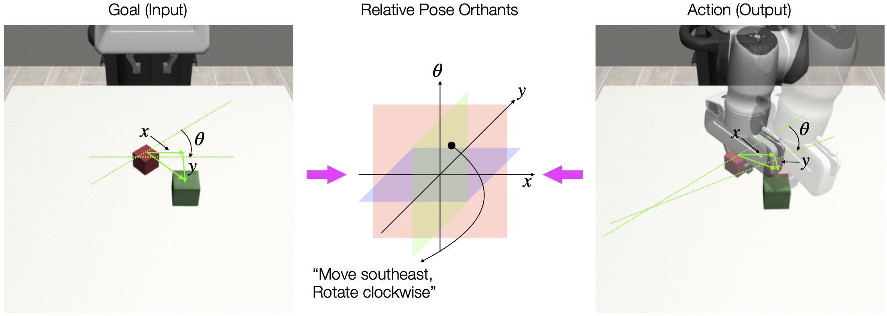

(Ours) Test 8 for NC-pretrained policy on clean background, trained under 100 demos. Success.
Abstract
We initiate a study of the geometry of the visual representation space —the information channel from the vision encoder to the action decoder— in an image-based control pipeline learned from behavior cloning. Inspired by the phenomenon of neural collapse (NC) in image classification (Papyan et al., 2020), we empirically demonstrate the prevalent emergence of a similar law of clustering in the visual representation space. Specifically,
- In discrete image-based control (e.g., Lunar Lander), the visual representations cluster according to the natural discrete action labels;
- In continuous image-based control (e.g., Planar Pushing and Block Stacking),
the clustering emerges according to
control-oriented
classes that are based on (a) the relative pose between the object and the target in the input or (b) the relative pose of the object induced by expert actions in the output. Each of the classes corresponds to one relative pose orthant (Repo).
Beyond empirical observation, we show such a law of clustering can be leveraged as an algorithmic tool to improve test-time performance when training a policy with a limited amount of expert demonstrations. Particularly, we pretrain the vision encoder using NC as a regularization to encourage control-oriented clustering of the visual features. Surprisingly, such an NC-pretrained vision encoder, when finetuned end-to-end with the action decoder, boosts the test-time performance by 10% to 35% in the low-data regime. Real-world vision-based planar pushing experiments confirmed the surprising advantage of control-oriented visual representation pretraining.
Neural Collapse in Image Classification
Neural Collapse (NC) is a clustering phenomenon which was firstly observed by Papyan et al. (2020). It illustrates an elegant geometric structure of the last-layer feature and classifier for a well-trained model in classification tasks. In particular, NC refers to a set of four manifestations in the representation space (i.e., the penultimate layer):
- (NC1) Variability collapse: feature vectors of the same class converge to their class mean.
- (NC2) Simplex ETF: globally-centered class mean vectors converge to a geometric configuration known as Simplex Equiangular Tight Frame (ETF), i.e., mean vectors have the same lengths and form equal angles pairwise.
- (NC3) Self-duality: the class means and the last-layer linear classifiers are self-dual.
- (NC4) Nearest class-center prediction: the network predicts the class whose mean vector has the minimum Euclidean distance to the feature of the test image.
Neural Collapse in Vision-based Control
We evaluate (NC1) using the class-distance normalized variance (CDNV) metric that depends on the ratio of within-class to between-class variabilities. We evaluate (NC2) using the standard deviation of the angles and lengths spanned by cluster mean vectors. We do not evaluate (NC3) and (NC4) because they require a linear classifier from the representation space to the output, which does not hold in our vision-based control setup. For comprehensive details, including the mathematical definitions of all three metrics, please refer to Section 2 & 3 in the paper.
Discrete Vision-based Control
Sample demo for Lunar Lander.
The Lunar Lander task is an environment in OpenAI Gym, whose control space is discrete with 4 actions:
- 0: do nothing
- 1: fire left orientation engine
- 2: fire main engine
- 3: fire right orientation engine
(NC1) for Lunar Lander.
Class-Distance Normalized Variance
(NC2-1) for Lunar Lander.
Standard Deviation of Angle Spanned by Cluster Mean Vectors
(NC2-2) for Lunar Lander.
Standard Deviation of Length of Cluster Mean Vectors
Continuous Vision-based Control
Sample demo for Planar Pushing on clean background.
Sample demo for Planar Pushing on visually complex background.
Sample demo for Block Stacking.
We now consider continuous vision-based control tasks, where an obvious set of class labels does not exist anymore. We focus on two tasks: Planar Pushing and Block Stacking.
We design two strategies to classify each training sample: one that is goal-based and the other that is action-based.
- Goal-based classification: For each training sample frame, we compute the relative pose of the target position with respect to the object.
- Action-based classification: For each training sample frame, we first detect the nearest (either current or future) action sequence that makes and breaks contact with the object, then compute the relative pose of object between break-contact frame and make-contact frame.
Control-oriented classification for Planar Pushing. Left: goal-based; Right: action-based.

Control-oriented classification for Block Stacking. Left: goal-based; Right: action-based.
Using the same NC metrics, we observe a strong control-oriented clustering in the visual representation space for both goal-based and action-based classification methods across Planar Pushing and Block Stacking. Here we show the curves for goal-based classfication.

(NC1) for Planar Pushing on clean background.
Class-Distance Normalized Variance
(NC2-1) for Planar Pushing on clean background.
Standard Deviation of Angle Spanned by Cluster Mean Vectors
(NC2-2) for Planar Pushing on clean background.
Standard Deviation of Length of Cluster Mean Vectors
(NC1) for Planar Pushing on visually complex background.
Class-Distance Normalized Variance
(NC2-1) for Planar Pushing on visually complex background.
Standard Deviation of Angle Spanned by Cluster Mean Vectors
(NC2-2) for Planar Pushing on visually complex background.
Standard Deviation of Length of Cluster Mean Vectors
(NC1) for Block Stacking.
Class-Distance Normalized Variance
(NC2-1) for Block Stacking.
Standard Deviation of Angle Spanned by Cluster Mean Vectors
(NC2-2) for Block Stacking.
Standard Deviation of Length of Cluster Mean Vectors
Real-world Validation
Example evaluation result #1 (clean background)
(Ours) Test 8 trajectory for NC-pretrained policy on clean background, trained under 100 demos.
Test 8 trajectory for baseline policy on clean background, trained under 100 demos.
Test 8 for baseline policy on clean background, trained under 100 demos. Failure.
Example evaluation result #2 (visually complex background)
(Ours) Test 8 trajectory for NC-pretrained policy on visually complex background, trained under 200 demos.
Test 8 trajectory for baseline policy on visually complex background, trained under 200 demos.
(Ours) Test 8 for NC-pretrained policy on visually complex background, trained under 200 demos. Success.
Test 8 for baseline policy on visually complex background, trained under 200 demos. Failure.
Check all real-world evalutaion results (by clicking the titles)
Our NC-pretrained policy demonstrates consistent and superior performance compared to the baseline policy. It successfully completes all tests that the baseline policy manages to accomplish, while also succeeding in a subset of tests (highlighted in background) where the baseline fails. The results showcase a monotonic improvement in performance, underscoring the efficacy of our approach across various test scenarios.
(Ours) NC-pretrained (8 out of 10) vs. Baseline (5 out of 10) policy on clean background, trained under 100 demos
NC-pretrained Policy Test 0: Success.
Baseline Policy Test 0: Success.
NC-pretrained Policy Test 1: Success.
Baseline Policy Test 1: Success.
NC-pretrained Policy Test 2: Failure.
Baseline Policy Test 2: Failure.
NC-pretrained Policy Test 3: Success.
Baseline Policy Test 3: Success.
NC-pretrained Policy Test 4: Success.
Baseline Policy Test 4: Success.
NC-pretrained Policy Test 5: Success.
Baseline Policy Test 5: Failure.
NC-pretrained Policy Test 6: Failure.
Baseline Policy Test 6: Failure.
NC-pretrained Policy Test 7: Success.
Baseline Policy Test 7: Success.
NC-pretrained Policy Test 8: Success.
Baseline Policy Test 8: Failure.
NC-pretrained Policy Test 9: Success.
Baseline Policy Test 9: Failure.
(Ours) NC-pretrained (4 out of 10) vs. Baseline (2 out of 10) policy on clean background, trained under 50 demos
NC-pretrained Policy Test 0: Success.
Baseline Policy Test 0: Success.
NC-pretrained Policy Test 1: Success.
Baseline Policy Test 1: Failure.
NC-pretrained Policy Test 2: Failure.
Baseline Policy Test 2: Failure.
NC-pretrained Policy Test 3: Failure.
Baseline Policy Test 3: Failure.
NC-pretrained Policy Test 4: Failure.
Baseline Policy Test 4: Failure.
NC-pretrained Policy Test 5: Failure.
Baseline Policy Test 5: Failure.
NC-pretrained Policy Test 6: Failure.
Baseline Policy Test 6: Failure.
NC-pretrained Policy Test 7: Success.
Baseline Policy Test 7: Failure.
NC-pretrained Policy Test 8: Failure.
Baseline Policy Test 8: Failure.
NC-pretrained Policy Test 9: Success.
Baseline Policy Test 9: Success.
(Ours) NC-pretrained (9 out of 10) vs. Baseline (6 out of 10) policy on visually complex background, trained under 200 demos
NC-pretrained Policy Test 0: Success.
Baseline Policy Test 0: Failure.
NC-pretrained Policy Test 1: Success.
Baseline Policy Test 1: Success.
NC-pretrained Policy Test 2: Success.
Baseline Policy Test 2: Success.
NC-pretrained Policy Test 3: Success.
Baseline Policy Test 3: Failure.
NC-pretrained Policy Test 4: Success.
Baseline Policy Test 4: Success.
NC-pretrained Policy Test 5: Success.
Baseline Policy Test 5: Success.
NC-pretrained Policy Test 6: Success.
Baseline Policy Test 6: Success.
NC-pretrained Policy Test 7: Failure.
Baseline Policy Test 7: Failure.
NC-pretrained Policy Test 8: Success.
Baseline Policy Test 8: Failure.
NC-pretrained Policy Test 9: Success.
Baseline Policy Test 9: Success.
BibTeX
@inproceedings{qi2025control,
title={Control-oriented Clustering of Visual Latent Representation},
author={Qi, Han and Yin, Haocheng and Yang, Heng},
booktitle={The Thirteenth International Conference on Learning Representations (ICLR)},
year={2025}
}